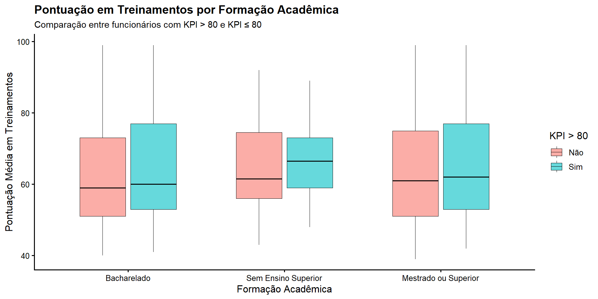
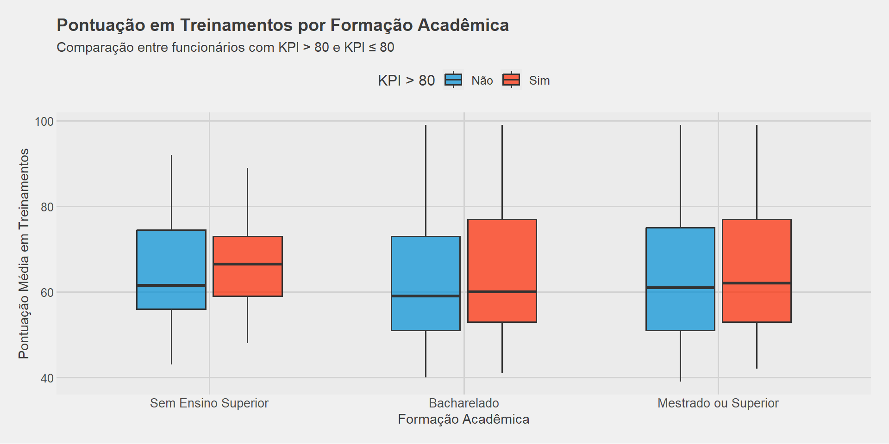
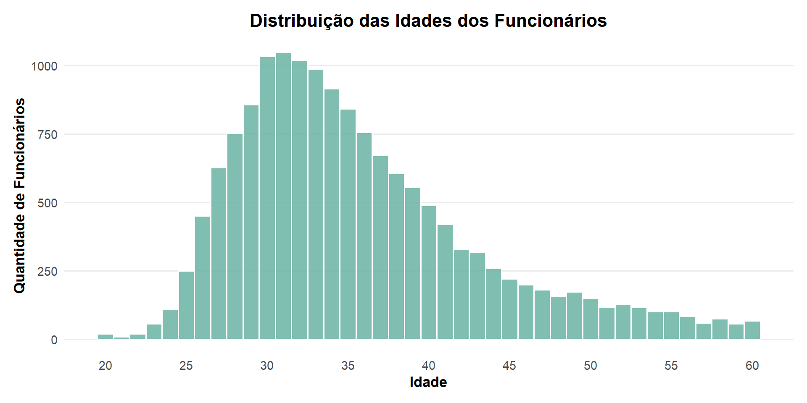
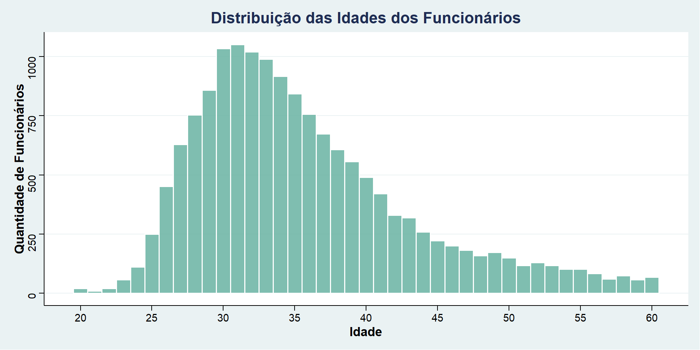
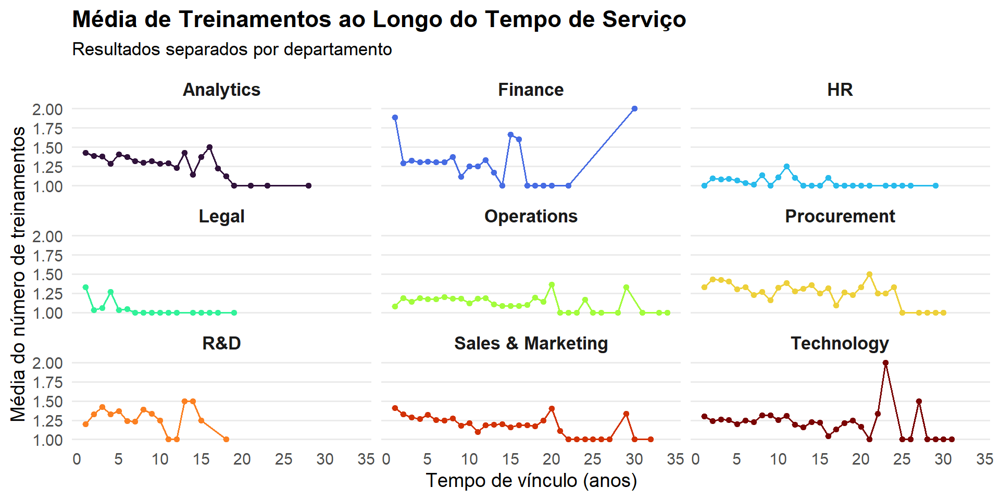
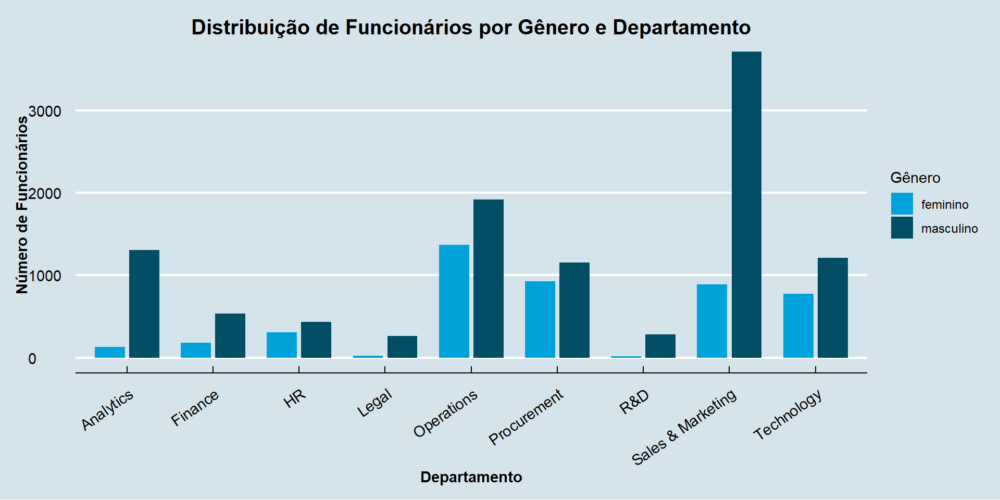
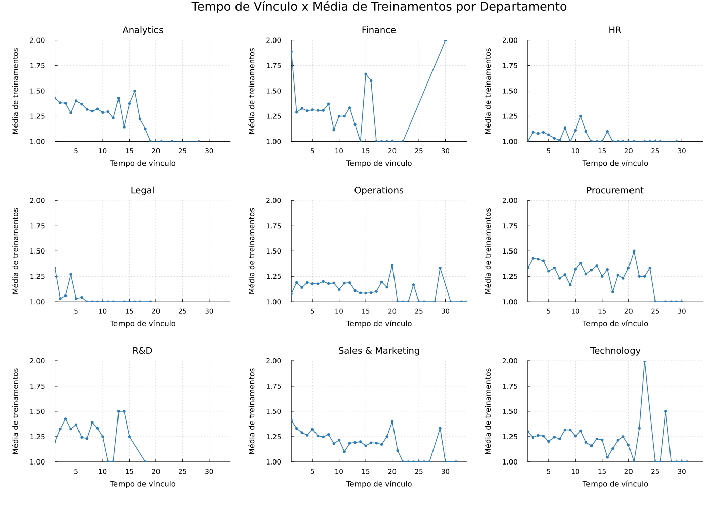

library(ggplot2)
ggplot(dados_corrigidos, aes(
x = education,
y = avg_training_score,
fill = KPIs_met_more_than_80
)) +
geom_boxplot(
alpha = 0.6,
width = 0.65,
outlier.color = "red",
color = "black",
size = 0.3
) +
labs(
title = "Pontuação em Treinamentos por Formação Acadêmica",
subtitle = "Comparação entre funcionários com KPI > 80 e KPI ≤ 80",
x = "Formação Acadêmica",
y = "Pontuação Média em Treinamentos",
fill = "KPI > 80"
) +
scale_fill_manual(values = c(
"Não" = "#F8766D",
"Sim" = "#00BFC4"
)) +
scale_x_discrete(labels = c(
"Below Secondary" = "Sem Ensino Superior",
"Bachelors" = "Bacharelado",
"Masters & above" = "Mestrado ou Superior"
)) +
theme_classic(base_size = 12) +
theme(
plot.title = element_text(size = 14, face = "bold"),
plot.subtitle = element_text(size = 11),
axis.text.x = element_text(angle = 0, hjust = 0.5),
legend.position = "right"
)Visualização de Dados: R, Python e Julia
Gustavo Coimbra de Souza Teixeira, Julia Folgueral, Maria Eduarda Villéla Silva, Nicole de Barros Silva
Introdução
- Comparação entre diferentes linguagens para visualização de dados;
- Foco em gráficos;
- Banco de dados usado: Análise de desempenho de funcionários para RH
O banco usado está disponível aqui.
Sobre o Banco de Dados
O conjunto de dados apresenta informações dos funcionários de uma empresa, incluindo:
- Departamento
- Formação acadêmica
- Gênero
- Canal de recrutamento
- Nº de treinamentos
- Idade
- Avaliação anterior
- Tempo de serviço
- Indicadores-chave de desempenho(KPI’s) atingidos
- Média de treinamentos
Critérios para comparação entre linguagens
Para realizar uma comparação justa entre R, Python e Julia foram considerados os seguintes critérios:
- Tempo de execução do gráfico;
- Memória usada para plotar o gráfico;
- Quantidade de linhas de código.
Linguagem R
Boxplot
Pontuação em treinamentos por formação acadêmica

Boxplot usando ggthemes()
Tema: FiveThirtyEight (famoso site norte-americano de jornalismo de dados).
Estilo clean, jornalístico e moderno aos gráficos.
# Converte "education" para fator e ordena o eixo x
dados_corrigidos$education <- factor(
dados_corrigidos$education,
levels = c("Below Secondary", "Bachelors", "Masters & above")
)
# Gráfico
ggplot(dados_corrigidos, aes(
x = education,
y = avg_training_score,
fill = KPIs_met_more_than_80
)) +
geom_boxplot(
alpha = 0.7,
width = 0.6,
outlier.color = "red"
) +
scale_fill_fivethirtyeight() + # Paleta de cores do estilo FiveThirtyEight.
theme_fivethirtyeight() + # Define o tema do FiveThirtyEight.
labs(
title = "Pontuação em Treinamentos por Formação Acadêmica",
subtitle = "Comparação entre funcionários com KPI > 80 e KPI ≤ 80",
x = "Formação Acadêmica",
y = "Pontuação Média em Treinamentos",
fill = "KPI > 80"
) +
scale_x_discrete(labels = c(
"Below Secondary" = "Sem Ensino Superior",
"Bachelors" = "Bacharelado",
"Masters & above" = "Mestrado ou Superior"
)) +
theme(
legend.position = "top",
plot.title = element_text(size = 14),
plot.subtitle = element_text(size = 11),
axis.text.x = element_text(size = 10),
axis.title = element_text(size = 11)
)
Histograma
Distribuição das idades dos funcionários
# Gráfico
dados_corrigidos %>%
ggplot(aes(x = age)) +
geom_histogram(
binwidth = 1,
fill = "#69b3a2",
color = "white",
alpha = 0.85
) +
ggtitle("Distribuição das Idades dos Funcionários") +
labs(
x = "Idade",
y = "Quantidade de Funcionários"
) +
theme_minimal(base_size = 13) +
theme(
plot.title = element_text(size = 16, face = "bold", hjust = 0.5),
axis.text = element_text(size = 11),
axis.title = element_text(size = 13, face = "bold"),
panel.grid.minor = element_blank(),
panel.grid.major.x = element_blank(),
plot.margin = margin(12, 12, 12, 12)
) +
scale_x_continuous(
breaks = seq(min(dados_corrigidos$age), max(dados_corrigidos$age), 5)
)
Histograma usando o ggthemes
Tema: Stata (software profissional de estatística).
# Gráfico
dados_corrigidos %>%
ggplot(aes(x = age)) +
geom_histogram(
binwidth = 1,
fill = "#69b3a2",
color = "white",
alpha = 0.85
) +
ggtitle("Distribuição das Idades dos Funcionários") +
labs(
x = "Idade",
y = "Quantidade de Funcionários"
) +
theme_stata(base_size = 13) + # Tema Stata (pacote ggthemes)
theme(
plot.title = element_text(size = 16, face = "bold", hjust = 0.5),
axis.text = element_text(size = 11),
axis.title = element_text(size = 13, face = "bold"),
panel.grid.minor = element_blank(),
plot.margin = margin(12, 12, 12, 12)
) +
scale_x_continuous(
breaks = seq(min(dados_corrigidos$age), max(dados_corrigidos$age), 5)
)
Gráfico de linhas facetado
Média de treinamentos ao longo do tempo de serviço
# Preparação dos dados
dados_linha2 <- dados_corrigidos %>%
group_by(department, length_of_service) %>%
summarise(media_treinamentos = mean(no_of_trainings), .groups = "drop") %>%
drop_na()
# Gráfico de linhas facetado
ggplot(dados_linha2, aes(x = length_of_service, y = media_treinamentos, color = department)) +
geom_line(size = 0.7) +
geom_point(size = 1.5) +
facet_wrap(~ department) +
scale_color_viridis_d(option = "turbo") + # Paleta viridis
scale_x_continuous(breaks = scales::pretty_breaks(n = 8)) +
scale_y_continuous(limits = c(1, 2)) + # mesmo intervalo em todas as facetas
labs(
title = "Média de Treinamentos ao Longo do Tempo de Serviço",
subtitle = "Resultados separados por departamento",
x = "Tempo de vínculo (anos)",
y = "Média do número de treinamentos",
color = "Departamento"
) +
theme_minimal(base_size = 14) +
theme(
legend.position = "none",
strip.text = element_text(face = "bold", size = 13),
plot.title = element_text(face = "bold", size = 17),
plot.subtitle = element_text(size = 13, margin = margin(b = 10)),
panel.grid.minor = element_blank(),
panel.grid.major.x = element_blank()
)
Gráfico de barras usando o ggthemes
Tema: The Economist (replica o estilo visual dos gráficos publicados pela revista The Economist)
Design limpo, profissional e sofisticado.
Distribuição de funcionários por gênero e departamento
# Grafico
ggplot(dados_corrigidos, aes(x = department, fill = gender)) +
geom_bar(position = position_dodge(width = 0.8), width = 0.7) +
labs(
title = "Distribuição de Funcionários por Gênero e Departamento",
x = "Departamento",
y = "Número de Funcionários",
fill = "Gênero"
) +
# Paleta e tema Economist (ggthemes)
scale_fill_economist() +
theme_economist() +
# Ajustes estéticos
theme(
plot.title = element_text(face = "bold", size = 15, hjust = 0.5),
plot.subtitle = element_text(size = 10, hjust = 0.5, margin = margin(b = 10)),
axis.text.x = element_text(angle = 35, vjust = 1, hjust = 1),
legend.position = "right",
legend.text = element_text(size = 9),
legend.title = element_text(size = 11),
panel.grid.major.x = element_blank(),
panel.grid.minor = element_blank(),
axis.title = element_text(face = "bold")
)
Python
Boxplot
Pontuação em treinamentos por formação acadêmica
from plotnine import (
ggplot, aes, geom_boxplot, labs, theme_minimal,
scale_fill_manual, scale_x_discrete, theme, element_text
)
# Grafico
plot1_python = ((
ggplot(dados_corrigidos, aes(
x='education',
y='avg_training_score',
fill='KPIs_met_more_than_80'
))
+ geom_boxplot(alpha=0.7, outlier_color="red")
+ labs(
title="Relação entre Formação Acadêmica, Pontuação em Treinamentos e KPI > 80",
x="Formação Acadêmica",
y="Pontuação Média em Treinamentos",
fill="KPI > 80"
)
+ scale_fill_manual(values={
"Não": "#F8766D",
"Sim": "#00BFC4"
})
+ scale_x_discrete(labels={
"Below Secondary": "Sem Ensino Superior",
"Bachelors": "Bacharelado",
"Masters & above": "Mestrado ou Superior"
})
+ theme_minimal()
+ theme(
plot_title=element_text(size=12, weight="bold"),
axis_text_x=element_text(angle=0, ha="center")
)
)
)
plot1_python.save("plot1_python.png", width=12, height=8, dpi=300)
Histograma
Distribuição das idades dos funcionários
from plotnine import ggplot, aes, geom_histogram, labs, theme_minimal, theme, element_text
# Gráfico
plot4_python = (
ggplot(dados_corrigidos, aes(x="age"))
+ geom_histogram(
binwidth=1,
fill="#69b3a2",
color="#e9ecef",
alpha=0.9
)
+ labs(
title="Distribuição das idades dos funcionários",
x="Idade",
y="Quantidades de funcionários"
)
+ theme_minimal()
+ theme(
plot_title=element_text(size=15, weight="bold"),
axis_title=element_text(size=12)
)
)
plot4_python.save("plot4_python.png", width=12, height=8, dpi=300)
Grafico de linhas facetado
Média de treinamentos ao longo do tempo de serviço
Pacote “seaborn”: facilita a criação de um gráfico facetado.
import pandas as pd
import matplotlib.pyplot as plt
import seaborn as sns
#Preparação dos dados - Criar tabela POR DEPARTAMENTO e tempo de serviço
dados_linha2 = (dados_corrigidos
.groupby(['department', 'length_of_service'])
.agg(media_treinamentos=('no_of_trainings', 'mean'))
.reset_index())
# Configurar estilo
sns.set_style("whitegrid")
plt.rcParams['font.size'] = 14
# Gráfico
g = sns.FacetGrid(
dados_linha2,
col='department',
col_wrap=3,
sharey=True, # Mesma escala em todas as facetas
height=4,
aspect=1.2
)
g.map(
plt.plot,
'length_of_service',
'media_treinamentos',
color='#2C7BB6',
linewidth=1.2,
marker='o',
markersize=5
)
g.fig.subplots_adjust(hspace=0.35, wspace=0.25)
# Títulos
g.set_axis_labels('Tempo de vínculo empregatício', 'Média do número de treinamentos')
g.set_titles(col_template="{col_name}", size=12, weight='bold')
g.fig.suptitle('Tempo de Vínculo x Média de Treinamentos por Departamento',
fontsize=16, fontweight='bold', y=1.05)
plt.tight_layout()
# Salvar figura
plt.savefig('plot6_dep_python.png', dpi=300, bbox_inches='tight')
plt.show()
Gráfico de barras
Quantidade de funcionários por genêro em cada departamento
import time
import psutil
import os
from plotnine import (
ggplot, aes, geom_bar, labs, theme_minimal,
theme, element_rect, element_text, scale_fill_manual
)
# Gráfico
plot7_python = (
ggplot(dados_corrigidos, aes(x='department', fill='gender'))
+ geom_bar(position='dodge')
+ labs(
title="Distribuição de Funcionários por Gênero e Departamento",
x="Departamento",
y="Número de Funcionários",
fill="Gênero"
)
+ scale_fill_manual(
values={
"masculino": "#1f77b4", # azul
"feminino": "#ff69b4" # rosa
}
)
+ theme_minimal(base_size=14)
+ theme(
panel_background=element_rect(fill="#E6F0FA", color=None),
plot_background=element_rect(fill="#E6F0FA", color=None),
axis_text_x=element_text(angle=25, ha="right"),
plot_title=element_text(weight="bold", size=16)
)
)
# Salvar o gráfico
plot7_python.save("plot7_python.png", width=12, height=8, dpi=300)
Julia
Boxplot
using DataFrames
using StatsPlots
using Plots
resultado = @timed begin
plot1_julia = @df df groupedboxplot(
:education_pt,
:avg_training_score,
group = :KPIs_met_more_than_80,
fillalpha = 0.7,
outliers = true,
outliercolor = :red,
palette = ["#F8766D", "#00BFC4"],
title = "Relação entre Formação Acadêmica, Pontuação em Treinamentos e KPI > 80",
xlabel = "Formação Acadêmica",
ylabel = "Pontuação Média em Treinamentos",
label = ["Não" "Sim"],
legend = :topright,
size = (1200, 800),
titlefontsize = 12,
left_margin = 10Plots.mm,
bottom_margin = 5Plots.mm
)
Plots.savefig(plot1_julia, "plot1_julia.png")
plot1_julia
end
# Exibir o gráfico
display(plot1_julia)
Histograma
Distribuição das idades dos funcionários
#using DataFrames
#using StatsPlots
#using Plots
# Converter para DataFrame
df = DataFrame(dados_corrigidos)
# Criar histograma
resultado = @timed begin
plot4_julia = @df df Plots.histogram(
:age,
bins = minimum(:age):1:maximum(:age),
fillcolor = "#69b3a2",
linecolor = "#e9ecef",
fillalpha = 0.9,
title = "Distribuição das idades dos funcionários",
xlabel = "Idade",
ylabel = "Quantidades de funcionários",
legend = false,
size = (1200, 800),
titlefontsize = 15,
#titlefont = font(15, "bold"),
guidefontsize = 12,
left_margin = 10Plots.mm,
bottom_margin = 5Plots.mm
)
Plots.savefig(plot4_julia, "plot4_julia.png")
plot4_julia
end
# Exibir o gráfico
display(plot4_julia)
Gráfico de linhas facetado
Média de treinamentos ao longo do tempo de serviço - separado por área
# Converter para DataFrame
df = DataFrame(dados_corrigidos)
# Preparação dos dados - Criar tabela agregada por departamento e tempo de serviço
dados_linha2 = combine(groupby(df, [:department, :length_of_service]),
:no_of_trainings => mean => :media_treinamentos)
# Ordenar por departamento e tempo de serviço
sort!(dados_linha2, [:department, :length_of_service])
# Obter departamentos únicos
departments = sort(unique(dados_linha2.department))
n_dept = length(departments)
# Fixar a mesma escala para todas as facetas
x_min, x_max = extrema(dados_linha2.length_of_service)
y_min, y_max = extrema(dados_linha2.media_treinamentos)
# Criar função para gerar os gráficos de linhas
function create_line_plot(dept_name, dados_linha2)
df_dept = filter(row -> row.department == dept_name, dados_linha2)
return plot(
df_dept.length_of_service,
df_dept.media_treinamentos,
linewidth = 1.5,
linecolor = "#2C7BB6",
marker = :circle,
markersize = 3,
markercolor = "#2C7BB6",
markerstrokewidth = 0,
xlabel = "Tempo de vínculo",
ylabel = "Média de treinamentos",
title = dept_name,
legend = false,
titlefontsize = 12,
guidefontsize = 10,
tickfontsize = 9,
grid = true,
gridstyle = :dot,
gridalpha = 0.3,
xlim = (x_min, x_max),
ylim = (y_min, y_max)
)
end
# Plotar o gráfico
resultado = @timed begin
plots_list = [create_line_plot(dept, dados_linha2) for dept in departments]
n_rows = Int(ceil(n_dept / 3))
plot6f_julia = plot(
plots_list...,
layout = (n_rows, 3),
size = (1400, 1000),
left_margin = 10Plots.mm,
bottom_margin = 10Plots.mm
)
plot!(plot6f_julia,
plot_title = "Tempo de Vínculo x Média de Treinamentos por Departamento",
plot_titlefontsize = 16)
Plots.savefig(plot6f_julia, "plot6f_julia.png")
plot6f_julia
end
display(plot6f_julia)15421×13 DataFrame
Row │ employee_id department region education gender ⋯
│ Float64 String String String String ⋯
───────┼────────────────────────────────────────────────────────────────────────
1 │ 74430.0 HR region_4 Bachelors feminino ⋯
2 │ 72255.0 Sales & Marketing region_13 Bachelors masculino
3 │ 38562.0 Procurement region_2 Bachelors feminino
4 │ 64486.0 Finance region_29 Bachelors masculino
5 │ 46232.0 Procurement region_7 Bachelors masculino ⋯
6 │ 54542.0 Finance region_2 Bachelors masculino
7 │ 67269.0 Analytics region_22 Bachelors masculino
8 │ 66174.0 Technology region_7 Masters & above masculino
⋮ │ ⋮ ⋮ ⋮ ⋮ ⋮ ⋱
15415 │ 19281.0 Procurement region_17 Bachelors feminino ⋯
15416 │ 38568.0 Sales & Marketing region_24 Bachelors masculino
15417 │ 54192.0 HR region_22 Below Secondary masculino
15418 │ 57239.0 Sales & Marketing region_31 Bachelors masculino
15419 │ 73858.0 Sales & Marketing region_25 Bachelors masculino ⋯
15420 │ 64573.0 Technology region_7 Bachelors feminino
15421 │ 49584.0 HR region_7 Bachelors masculino
8 columns and 15406 rows omitted223×3 DataFrame
Row │ department length_of_service media_treinamentos
│ String Float64 Float64
─────┼──────────────────────────────────────────────────────────
1 │ HR 5.0 1.06667
2 │ Sales & Marketing 4.0 1.26415
3 │ Procurement 9.0 1.16379
4 │ Finance 7.0 1.30682
5 │ Procurement 2.0 1.43038
6 │ Finance 3.0 1.3271
7 │ Analytics 3.0 1.3785
8 │ Technology 11.0 1.30769
⋮ │ ⋮ ⋮ ⋮
217 │ Sales & Marketing 32.0 1.0
218 │ R&D 18.0 1.0
219 │ Legal 19.0 1.0
220 │ Technology 25.0 1.0
221 │ Procurement 29.0 1.0
222 │ Procurement 25.0 1.0
223 │ Finance 20.0 1.0
208 rows omitted223×3 DataFrame
Row │ department length_of_service media_treinamentos
│ String Float64 Float64
─────┼───────────────────────────────────────────────────
1 │ Analytics 1.0 1.42857
2 │ Analytics 2.0 1.38308
3 │ Analytics 3.0 1.3785
4 │ Analytics 4.0 1.28261
5 │ Analytics 5.0 1.40323
6 │ Analytics 6.0 1.3697
7 │ Analytics 7.0 1.31757
8 │ Analytics 8.0 1.3
⋮ │ ⋮ ⋮ ⋮
217 │ Technology 25.0 1.0
218 │ Technology 26.0 1.0
219 │ Technology 27.0 1.5
220 │ Technology 28.0 1.0
221 │ Technology 29.0 1.0
222 │ Technology 30.0 1.0
223 │ Technology 31.0 1.0
208 rows omitted9-element Vector{String}:
"Analytics"
"Finance"
"HR"
"Legal"
"Operations"
"Procurement"
"R&D"
"Sales & Marketing"
"Technology"9(1.0, 34.0)(1.0, 2.0)create_line_plot (generic function with 1 method)(value = Plot{Plots.GRBackend() n=9}, time = 3.2917257, bytes = 166036504, gctime = 0.0450407, gcstats = Base.GC_Diff(166036504, 2856, 0, 3237317, 20, 4555, 45040700, 1, 0), lock_conflicts = 0, compile_time = 2.9260814, recompile_time = 0.3625099)

Gráfico de barras
Quantidade de funcionários por genêro em cada departamento
# Converter para DataFrame
df = DataFrame(dados_corrigidos)
# Contar frequências por departmento e gênero
counts = combine(groupby(df, [:department, :gender]), nrow => :count)
# Preparação dos dados
counts_wide = unstack(counts, :department, :gender, :count, fill=0)
departments = counts_wide[:, 1]
genders = names(counts_wide)[2:end]
data_matrix = Matrix(counts_wide[:, 2:end])
# Criar gráfico
resultado = @timed begin
plot7_julia = groupedbar(
data_matrix,
bar_position = :dodge,
xticks = (1:length(departments), departments),
xrotation = 25,
label = permutedims(genders),
title = "Distribuição de Funcionários por Gênero e Departamento",
xlabel = "Departamento",
ylabel = "Número de Funcionários",
legend = :topright,
size = (1200, 800),
titlefontsize = 16,
guidefontsize = 14,
tickfontsize = 12,
legendfontsize = 12,
left_margin = 10Plots.mm,
bottom_margin = 10Plots.mm,
background_color = "#E6F0FA",
palette = ["#FF9999", "#6699CC"]
)
Plots.savefig(plot7_julia, "plot7_julia.png")
plot7_julia
end
# Exibir o gráfico
display(plot7_julia)
Explorando Alternativas de Visualização em Julia
O principal pacote utilizado para gerar gráficos em Julia foi o Plots.jl, que apresentou bom desempenho e flexibilidade.
Ainda assim, buscamos explorar outras opções para entender melhor o ecossistema de visualização da linguagem.
Entre os pacotes encontrados, o UnicodePlots.jl se destacou por suas vantagens únicas:
- Permite gerar gráficos diretamente no terminal, sem depender de janelas gráficas;
- É extremamente leve e rápido, ideal para máquinas com poucos recursos;
- Possui sintaxe simples e visualização imediata;
Essa diversidade mostra como Julia oferece diferentes soluções de visualização, cada uma adequada a necessidades específicas.
Gráfico de Barras
Departamento: HR
feminino | ▇▇▇▇ 306
masculino | ▇▇▇▇▇▇ 431
Departamento: Sales & Marketing
feminino | ▇▇▇▇▇▇▇▇▇▇▇▇ 889
masculino | ▇▇▇▇▇▇▇▇▇▇▇▇▇▇▇▇▇▇▇▇▇▇▇▇▇▇▇▇▇▇▇▇▇▇▇▇▇▇▇▇▇▇▇▇▇▇▇▇▇▇ 3712
Departamento: Procurement
feminino | ▇▇▇▇▇▇▇▇▇▇▇▇ 926
masculino | ▇▇▇▇▇▇▇▇▇▇▇▇▇▇▇▇ 1151
Departamento: Finance
feminino | ▇▇ 180
masculino | ▇▇▇▇▇▇▇ 536
Departamento: Analytics
feminino | ▇▇ 131
masculino | ▇▇▇▇▇▇▇▇▇▇▇▇▇▇▇▇▇▇ 1305
Departamento: Technology
feminino | ▇▇▇▇▇▇▇▇▇▇ 772
masculino | ▇▇▇▇▇▇▇▇▇▇▇▇▇▇▇▇ 1212
Departamento: Operations
feminino | ▇▇▇▇▇▇▇▇▇▇▇▇▇▇▇▇▇▇ 1365
masculino | ▇▇▇▇▇▇▇▇▇▇▇▇▇▇▇▇▇▇▇▇▇▇▇▇▇▇ 1919
Departamento: Legal
feminino | 25
masculino | ▇▇▇▇ 262
Departamento: R&D
feminino | 16
masculino | ▇▇▇▇ 283(value = nothing, time = 0.2238684, bytes = 8126975, gctime = 0.0, gcstats = Base.GC_Diff(8126975, 137, 0, 157692, 0, 0, 0, 0, 0), lock_conflicts = 0, compile_time = 0.2092876, recompile_time = 0.0)Histograma
Plots.UnicodePlotsBackend() ⠀Distribuição das idades dos funcionários⠀
┌────────────────────────────────────────┐
5 010│⠀⠀⠀⠀⠀⠀⠀⠀⠀⠀⡏⠉⚬⠉⡇⠀⠀⠀⠀⠀⠀⠀⠀⠀⠀⠀⠀⠀⠀⠀⠀⠀⠀⠀⠀⠀⠀⠀⠀⠀│y1
│⠀⠀⠀⠀⠀⠀⠀⠀⠀⠀⡇⠀⠀⠀⡇⠀⠀⠀⠀⠀⠀⠀⠀⠀⠀⠀⠀⠀⠀⠀⠀⠀⠀⠀⠀⠀⠀⠀⠀⠀│y1
│⠀⠀⠀⠀⠀⠀⠀⠀⠀⠀⡇⠀⠀⠀⡇⠀⠀⠀⠀⠀⠀⠀⠀⠀⠀⠀⠀⠀⠀⠀⠀⠀⠀⠀⠀⠀⠀⠀⠀⠀│
│⠀⠀⠀⠀⠀⠀⠀⠀⠀⠀⡇⠀⠀⠀⡇⠀⠀⠀⠀⠀⠀⠀⠀⠀⠀⠀⠀⠀⠀⠀⠀⠀⠀⠀⠀⠀⠀⠀⠀⠀│
│⠀⠀⠀⠀⠀⠀⠀⠀⠀⠀⡇⠀⠀⠀⡧⠤⚬⠤⡄⠀⠀⠀⠀⠀⠀⠀⠀⠀⠀⠀⠀⠀⠀⠀⠀⠀⠀⠀⠀⠀│
│⠀⠀⠀⠀⠀⠀⠀⠀⠀⠀⡇⠀⠀⠀⡇⠀⠀⠀⡇⠀⠀⠀⠀⠀⠀⠀⠀⠀⠀⠀⠀⠀⠀⠀⠀⠀⠀⠀⠀⠀│
│⠀⠀⠀⠀⠀⠀⡏⠉⚬⠉⡇⠀⠀⠀⡇⠀⠀⠀⡇⠀⠀⠀⠀⠀⠀⠀⠀⠀⠀⠀⠀⠀⠀⠀⠀⠀⠀⠀⠀⠀│
Quantidade de funcionários│⠀⠀⠀⠀⠀⠀⡇⠀⠀⠀⡇⠀⠀⠀⡇⠀⠀⠀⡇⠀⠀⠀⠀⠀⠀⠀⠀⠀⠀⠀⠀⠀⠀⠀⠀⠀⠀⠀⠀⠀│
│⠀⠀⠀⠀⠀⠀⡇⠀⠀⠀⡇⠀⠀⠀⡇⠀⠀⠀⡇⠀⠀⠀⠀⠀⠀⠀⠀⠀⠀⠀⠀⠀⠀⠀⠀⠀⠀⠀⠀⠀│
│⠀⠀⠀⠀⠀⠀⡇⠀⠀⠀⡇⠀⠀⠀⡇⠀⠀⠀⡧⚬⠤⢤⠀⠀⠀⠀⠀⠀⠀⠀⠀⠀⠀⠀⠀⠀⠀⠀⠀⠀│
│⠀⠀⠀⠀⠀⠀⡇⠀⠀⠀⡇⠀⠀⠀⡇⠀⠀⠀⡇⠀⠀⢸⠀⠀⠀⠀⠀⠀⠀⠀⠀⠀⠀⠀⠀⠀⠀⠀⠀⠀│
│⠀⠀⠀⠀⠀⠀⡇⠀⠀⠀⡇⠀⠀⠀⡇⠀⠀⠀⡇⠀⠀⢸⠀⠀⠀⠀⠀⠀⠀⠀⠀⠀⠀⠀⠀⠀⠀⠀⠀⠀│
│⠀⠀⠀⠀⠀⠀⡇⠀⠀⠀⡇⠀⠀⠀⡇⠀⠀⠀⡇⠀⠀⢸⠉⚬⠉⢹⠀⠀⠀⠀⠀⠀⠀⠀⠀⠀⠀⠀⠀⠀│
│⠀⠀⠀⠀⠀⠀⡇⠀⠀⠀⡇⠀⠀⠀⡇⠀⠀⠀⡇⠀⠀⢸⠀⠀⠀⢸⠉⚬⠉⢹⣀⚬⣀⣀⠀⠀⠀⠀⠀⠀│
0│⠀⠀⣖⣒⚬⣒⣇⣀⣀⣀⣇⣀⣀⣀⣇⣀⣀⣀⣇⣀⣀⣸⣀⣀⣀⣸⣀⣀⣀⣸⣀⣀⣀⣸⣀⚬⣀⣀⠀⠀│
└────────────────────────────────────────┘
⠀17.219⠀⠀⠀⠀⠀⠀⠀⠀⠀⠀⠀Idade⠀⠀⠀⠀⠀⠀⠀⠀⠀⠀⠀⠀67.781⠀ Qual é a melhor linguagem para visualização de dados?
| Linguagem | Tempo médio de execução (s) | Memória usada (MB) | Linhas de código |
|---|---|---|---|
| R | 15.91 | 1.81 | 105 |
| Python | 2.76 | 43.28 | 116 |
| Julia | 5.75 | 303.72 | 108 |
Observações:
Na linguagem R, o gráfico de linhas facetado é um outlier nas métricas. Seu tempo de execução foi de aproximadamente 62 segundos, enquanto os demais gráficos ficaram próximos de 1 segundo, além de apresentar maior consumo de memória.
Os gráficos produzidos com o pacote ggthemes não apresentaram diferenças significativas no número de linhas quando comparados aos demais.
Em Julia, notou-se também que o gráfico de boxplot consumiu aproximadamente 1GB, enquanto os outros não superaram 200MB.
Comparação dos Pacotes – Julia
| Pacotes de Julia | Tempo médio de execução (s) | Memória usada (MB) | Linhas de código |
|---|---|---|---|
| Plots | 21.18000 | 203.14 | 52 |
| UnicodePlots | 0.18675 | 3.08 | 32 |
Observações:
- Para esta comparação utilizamos apenas 2 gráficos (os mesmos feitos com o UnicodePlots), por isso as medidas usando Plots divergem das apresentadas na tabela anterior.
Conclusão
De modo geral, as três linguagens apresentam vantagens e desvantagens para objetivos diferentes:
R foi a linguagem que apresentou menor uso de memória e maior diversidade de temas disponíveis para personalização dos gráficos;
Python teve o menor tempo médio de execução, embora ofereça menos opções de personalização visual;
Julia apresentou maior uso de memória e maior tempo de execução, mas conta com bibliotecas (não exploradas em profundidade neste trabalho) que podem otimizar esses fatores, além de boas possibilidades de personalização.
As três linguagens apresentam quantidades muito próximas de linhas de código.